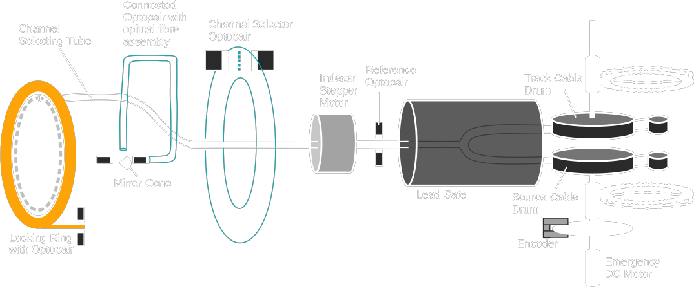
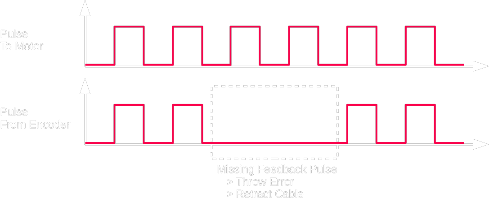

| QA |
| Daily |
- Safety:
self-test
interlock: door / interrupt / emergency
REM / beam on light / beam on alarm / CCTV
- Source Position: check cable and source on check ruler through CCTV
- Treatment timer
- C-arm
|
| Weekly |
- Source Position: use film
< 1 mm
- Activity Constancy Check
< 3% (????????)
|
Quarterly
(New Source AT)
|
- Source Replacement
→ Activity
→ Position
→ Time
→ Treatment plan match
- Input new source S/N, AKR into console + TPS
- Machine timer
- Curvature check
- Emergency kit
|
|
| Source |
Originally use Radium → daughter Radon gas also radioactive :(
Now use Ir-192, :) less thick room shielding
|
| Machine |

Features
- Ir-192 Source
- high specific activity (> 1000 Ci g-1 )
- low γ energy (317, 468 keV)
- Check cable slightly longer than source cable
- Feedback Optopair/Encoder
| Locking Ring Optopair |
check if locking ring is locked to secure tubes |
| Connected Optopair |
check if transfer tube is fully inserted that it blocks the light to optical fibre |
| Channel Selector Optopair |
check if the right channel is selected
5-bit representing 30 channels
|
| Reference Optopair |
check if source is in safe/out of safe
start timer after a set delay to account for the time from reference optopair to indexer face
|
| Source Cable Encoder |
check if cable is obstructed by counting feedback pulse

|
- Cable drum with driving belt to make sure cable swirl around the wheel (Nucletron)
- Detected/Loose Belt
- Release column to activate micro-switch
|
| Parameters |
- Dwell Time
= Time from Indexer Face to Destination
- Decay Correction
- Applicator Enclosing Cylinder Type
|
| Applicator |
Intracavitary
- Applicator
- Rotterdam
- Tandem
- Utrecht
- VMC
- Fletcher Williamson
Intersitial / Surface Mould
Interluminal
|